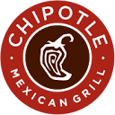
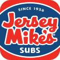
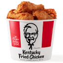

Healthy fast food by restaurant
Explore meals from 15 restaurants, or find a match for your goals.
83 tracked menu options15 restaurant chainsOfficial sources checked August 2026
Healthy options by restaurant
Choose a restaurant to compare meals, nutrition and ordering tips.
CAVA4 options Chick-fil-A11 options  McDonald’s6 options Panda Express7 options Panera5 options Popeyes4 options Starbucks5 options Subway7 options Sweetgreen5 options Taco Bell5 options Wendy’s5 options
McDonald’s6 options Panda Express7 options Panera5 options Popeyes4 options Starbucks5 options Subway7 options Sweetgreen5 options Taco Bell5 options Wendy’s5 options

Chipotle6 options Dunkin’4 options
Jersey Mike’s4 options
KFC5 optionsHealthy fast-food options by the metric you care about
Compare standard menu items. Portions and customizations can change the numbers.
Highest-protein fast food
- Bigger Plate: fried rice + 3 grilled teriyaki chicken entrées
Panda Express112 g - High-protein bulking order: 30-count grilled nuggets, waffle fries and large fruit cup
Chick-fil-A104 g - High-protein bulking order: Grilled Club, waffle fries and 12-count grilled nuggets
Chick-fil-A80 g - Bigger Plate: chow mein + grilled teriyaki + orange chicken + string bean chicken
Panda Express76 g - Footlong Grilled Chicken
Subway62 g - Footlong Rotisserie Chicken
Subway58 g - Footlong Meatball Marinara
Subway54 g - Chicken Bowl with white rice and black beans
Chipotle48 g
Lower-calorie meals and entrées
- Grilled Teriyaki Chicken
Panda Express275 cal - 6-inch Oven Roasted Turkey
Subway280 cal - Grilled Chicken Wrap
Wendy’s280 cal - 5 Blackened Tenders
Popeyes280 cal - Turkey Sub in a Tub
Jersey Mike’s280 cal - Egg White Grill
Chick-fil-A290 cal - Spinach, Feta & Egg White Wrap
Starbucks290 cal - Egg McMuffin
McDonald’s310 cal
Higher-energy meals for bulking
- Bigger Plate: chow mein + grilled teriyaki + orange chicken + string bean chicken
Panda Express1595 cal - Bigger Plate: fried rice + 3 grilled teriyaki chicken entrées
Panda Express1445 cal - High-protein bulking order: Grilled Club, waffle fries and 12-count grilled nuggets
Chick-fil-A1140 cal - Footlong Meatball Marinara
Subway1140 cal - High-protein bulking order: 30-count grilled nuggets, waffle fries and large fruit cup
Chick-fil-A1050 cal - Footlong Grilled Chicken
Subway1020 cal - Harvest Bowl
Sweetgreen740 cal - Harissa Avocado bowl
CAVA730 cal
Highest-fiber options
- Sofritas Bowl with brown rice and black beans
Chipotle18 g - Veggie Bowl with brown rice, black beans and guacamole
Chipotle18 g - High Protein-High Fiber Bowl
Chipotle14 g - Chicken Bowl with white rice and black beans
Chipotle14 g - Chick-fil-A Cool Wrap
Chick-fil-A14 g - Bigger Plate: chow mein + grilled teriyaki + orange chicken + string bean chicken
Panda Express14 g - Steak Salad with black beans, no rice
Chipotle13 g - Harissa Avocado bowl
CAVA12 g
Lower-sodium meals and entrées
Only substantial tracked items with published sodium qualify. Missing sodium is never treated as zero.
- Eggs & Cheddar Protein Box
Starbucks450 mg - Grilled Teriyaki Chicken
Panda Express470 mg - Broccoli Beef with white steamed rice
Panda Express520 mg - Apple Pecan Salad, half
Wendy’s570 mg - 6-inch Veggie Delite
Subway600 mg - 6-inch Rotisserie Chicken
Subway640 mg - Mediterranean Chicken Greens with Grains, half
Panera660 mg - Chicken & Quinoa Protein Bowl
Starbucks680 mg
Higher-protein vegetarian options
- Sofritas Bowl with brown rice and black beans
Chipotle24 g - Eggs & Cheddar Protein Box
Starbucks22 g - Spinach, Feta & Egg White Wrap
Starbucks20 g - Veggie Sub, regular
Jersey Mike’s20 g - Shroomami
Sweetgreen18 g - 6-inch Veggie Delite
Subway17 g - Veggie Bowl with brown rice, black beans and guacamole
Chipotle15 g - Egg & Cheese English Muffin
Dunkin’14 g
Plant-based menu options
- Sofritas Bowl with brown rice and black beans
Chipotle24 g - Shroomami
Sweetgreen18 g - Veggie Bowl with brown rice, black beans and guacamole
Chipotle15 g - Black Bean Burrito
Taco Bell13 g - Super Greens side
Panda Express9 g - Rolled & Steel-Cut Oatmeal
Starbucks5 g - Ten Vegetable Soup, cup
Panera3 g - Green Beans
KFC1 g
High-protein fast-food breakfasts
- Egg White Grill
Chick-fil-A26 g - Sourdough Breakfast Sandwich
Dunkin’24 g - Eggs & Cheddar Protein Box
Starbucks22 g - Spinach, Feta & Egg White Wrap
Starbucks20 g - Turkey Bacon & Egg White Sandwich
Starbucks17 g - Egg McMuffin
McDonald’s17 g - Egg & Cheese English Muffin
Dunkin’14 g - Turkey Sausage Wake-Up Wrap
Dunkin’12 g
What “healthy” means here
It means useful information for a specific goal—not a universal label. Rankings keep calories, protein, fiber and sodium visible together.
Important limits
- Standard U.S. menu builds, not every customization
- Entrées, sides and snacks are classified separately
- Missing values remain blank, never zero
- Diet tags do not imply allergy safety
- Menus and recipes change; confirm the official source